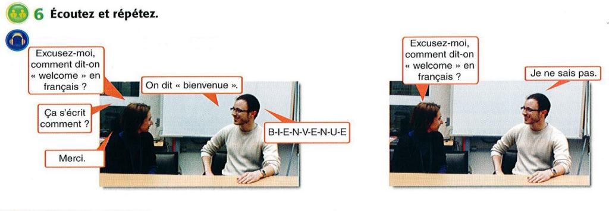
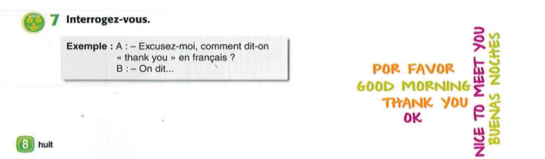
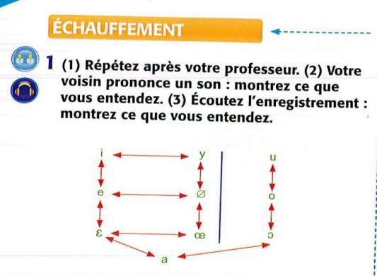
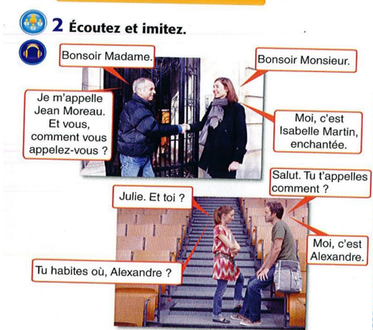
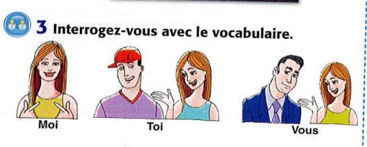
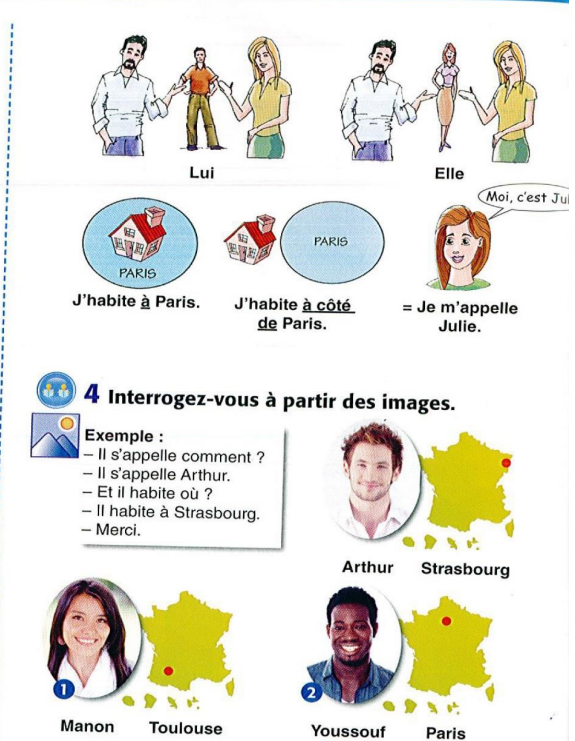

Module 1: Les Fondations (أساسيات المحادثة)
The essential building blocks for your very first conversation, from greetings to core verbs.
ال لبنات الأساسية لأول محادثة، من التحية للكلمات الأساسية.

Greetings & Politeness (التحية والتعارف)
Bonjour!
النطق: بون-چووور
تفاصيل النطق الدقيق:
- المقطع الأول "Bon" مش "بُن" عادية. دي فيها غُنّة خفيفة من الأنف، زي الـ "on" في كلمة "song" بالانجليزي بس من غير ما تقفل بقك في الآخر.
- المقطع التاني "jour"، الـ "j" هنا هي الـ "چ" المصرية (زي چاكيت). الـ "r" هي الـ "R" الفرنسية اللي من الحلق (أقرب لصوت الغين الخفيفة).
Pronunciation Tips:
- The first syllable "Bon" is not like a plain "bun". It has a light nasal sound, like the "on" in the English word "song" but without closing your throat at the end.
- The second syllable "jour": The "j" here is like the Egyptian "ch" (as in "chakiet"). The "r" is the French "R" from the throat (closer to a light غ sound).
Bonsoir!
النطق: بون-سواار
تفاصيل النطق الدقيق:
نفس غُنّة الـ "Bon" اللي فوق، ووراها "swar" واضحة.
Pronunciation Tips:
The same light nasal "Bon" as above, followed by a clear "swar".
The Core of a Sentence: Pronouns and Verbs
ل Saying أي حاجة مهمة، محتاجين الشخص (ضمير) والفعل. خلينا نتعلم أهم كلمتين في اللغة الفرنسية.
To say anything meaningful, you need a person (a pronoun) and an action (a verb). Let's learn the two most important verbs in all of French.
Subject Pronouns (Les Pronoms Sujets)
دهم كلمات "أنا"، "أنت"، "هو"، إلخ.
These are the words for "I", "you", "he", etc.
- Je (j') - I - أنا
- Tu - You (for one friend, family member) - أنت (لصديق أو أحد أفراد العائلة)
- Il / Elle - He / She - هو / هي
- Nous - We - نحن
- Vous - You (for a stranger, a group of people, or to show respect) - أنتم (لأجنبي، أو مجموعة، أو لإظهار الاحترام)
- Ils / Elles - They (Ils for all-male or mixed groups, Elles for all-female groups) - هم (Ils للذكور أو المجموعات المختلطة، Elles للإناث فقط)
Important Note:
The choice between Tu and Vous is crucial in French. It reflects the relationship and level of formality. Starting with Vous is safer with strangers or in formal situations.
ملاحظة مهمة:
الاختيار بين Tu و Vous مهم جداً في اللغة الفرنسية. هو يعكس العلاقة ومستوى الاحترام. البدء بـ Vous هو الأفضل مع الغرباء أو في المواقف الرسمية.
The Verb 'Être' (To Be)
الفعل الأساسي للتعبير عن الهوية، المهنة، والحالات.
This is your go-to verb for describing identity, professions, and states of being.
- Je suis (I am) - أنا (I am)
- Tu es (You are) - أنت (You are)
- Il/Elle est (He/She is) - هو/هي (He/She is)
- Nous sommes (We are) - نحن (We are)
- Vous êtes (You are) - أنتم (You are)
- Ils/Elles sont (They are) - هم/هن (They are)
مثال: "أنا مصري" هي Je suis égyptien(ne). (استخدم égyptienne لو كنتِ أنثى).
The Verb 'Avoir' (To Have)
الفعل الأساسي للتعبير عن الملكية، العمر، والعديد من التعبيرات.
This verb is essential for talking about possession, age, and many expressions.
- J'ai (I have) - عندي (I have)
- Tu as (You have) - عندك (You have)
- Il/Elle a (He/She has) - عنده/عندها (He/She has)
- Nous avons (We have) - عندنا (We have)
- Vous avez (You have) - عندكم (You have)
- Ils/Elles ont (They have) - عندهم/عندهن (They have)
مثال: "عندك سؤال" هي Tu as une question. أو Vous avez une question.
Introductions & "How Are You?"
Je m'appelle...
النطق: چوه ما-پيل...
تفاصيل النطق الدقيق:
- "Je" صوتها رخيم وقصير (zhuh), "m'appelle" بتتنطق ما-پيل.
Pronunciation Tips:
- "Je" has a soft, short sound (zhuh). "m'appelle" is pronounced "mah-pel".
Enchanté! / Enchantée!
النطق: أون-شون-تيه. (النطق واحد للاثنين)
تفاصيل النطق الدقيق:
- "En" و "chan" كلاهما بهما غُنّة أنفية. `Enchanté` للولد, `Enchantée` للبنت.
Pronunciation Tips:
- Both "En" and "chan" have nasal sounds. `Enchanté` for a man, `Enchantée` for a woman.
Comment allez-vous ? Formal / Plural
النطق: كو-مون تا-ليه ڤو؟
سر النطق (مهم جدًا):
ظاهرة الـ Liaison (الربط). حرف "t" الساكن في `comment` يرتبط بحرف العلة "a" في `allez`، فتسمعها "تا-ليه". هذا سر الطلاقة!
Pronunciation Secret (Very Important!):
The phenomenon of Liaison. The silent "t" in `comment` links to the vowel "a" in `allez`, so you hear it as "ta-leh-voo". This is the key to fluency!
Ça va ? Informal
النطق: صا ڤا؟
Replies (الردود ونطقها الدقيق):
- Très bien: تريه بيان. (الـ "ien" في "bien" بها غُنّة "يان").
- Ça va: صا ڤا.
- Pas mal: پا مال.
- Bof...: بوف. (كلمة تعتمد على تعبير الوجه ونفخة الهواء أكثر من الصوت).
- Très bien: treh bee-ahn. (The "ien" in "bien" has the "yan" nasal sound).
- Ça va: sah vah.
- Pas mal: pah mal.
- Bof...: bohf. (This word depends more on facial expression and a puff of air than the actual sound).
Putting It All Together: A First Dialogue
Notice how `être` (to be) is used to state identity and nationality.
لاحظ كيف يُستخدم فعل `être` (أن يكون) للتعبير عن الهوية والجنسية.
Ana: Bonjour! Je m'appelle Ana. Comment allez-vous?
Marc: Bonjour Ana! Je vais très bien, merci. Je m'appelle Marc. Enchanté!
Ana: Enchantée! Vous êtes français, Marc?
Marc: Non, je suis canadien. Et vous?
Ana: Je suis égyptienne.
آنا: صباح الخير! اسمي آنا. كيف حالكم؟
مارك: صباح النور آنا! أنا بخير، شكراً. اسمي مارك. سعيد بمعرفتك!
آنا: سعيدة بمعرفتك! هل أنت فرنسي يا مارك؟
مارك: لا، أنا كندي. وأنتِ؟
آنا: أنا مصرية.
Module 2: L'Atelier de Prononciation (الخلاصة التقنية)
Mastering the technical secrets that make you sound authentically French.
إتقان الأسرار التقنية اللي بتخليك تتكلم الفرنسية بشكل أصيل.

The Rules of 'C' and 'G' (قاعدة حرف C و G)
قاعدة حرف C:
- يتنطق "كاف" (K): قبل A, O, U. أمثلة: cocacola, calculatrice, cube.
- يتنطق "سين" (S): قبل E, I, Y. أمثلة: merci, cinema.
- إزاي ننطقه "سين" غصب عن القاعدة؟ نستخدم العلامة السحرية Ç (Cedilla). دي إشارة بتقولك "انطقني سين". أمثلة: français, garçon.
قاعدة حرف G:
- يتنطق "جيم" مصرية (Hard G): قبل A, O, U. أمثلة: garçon, gomme.
- يتنطق "چيم" معطشة (Soft J): قبل E, I, Y. أمثلة: girafe, gilet.
Rule for 'C':
- Pronounced "K": Before A, O, U. Examples: cocacola, calculator, cube.
- Pronounced "S": Before E, I, Y. Examples: merci (thank you), cinema.
- How to force "S" sound? Use the magic mark Ç (Cedilla). It tells you "pronounce me 'S'". Examples: français (French), garçon (boy/waiter).
Rule for 'G':
- Pronounced "Hard G" (like in "go"): Before A, O, U. Examples: garçon (boy/waiter), gomme (eraser).
- Pronounced "Soft J" (like in "measure"): Before E, I, Y. Examples: giraffe (giraffe), gilet (vest).
Accents & Sound Groups (العلامات ومجموعات الحروف)
العلامات (Accents) وتأثيرها على النطق:
- é (accent aigu): يجعل صوت الـ e "إيه" مقفولة وقصيرة. مثال: répétér.
- è (accent grave): يجعل صوت الـ e "إَه" مفتوحة. مثال: mère.
- ê (accent circonflexe): يطيل صوت الحرف قليلاً.
- ë (tréma): يفصل الحرفين في النطق. مثال: Noël (نو-إيل).
- ' (apostrophe): يحل محل حرف متحرك محذوف. مثال: Je aime (غلط) ← J'aime (صح).
مجموعات الحروف اللي صوتها واحد (أهم جزء):
- صوت "أُو" (like "go"): `o`, `eau`, `au` كلهم نفس النطق. أمثلة: chapeau.
- صوت غريب (like 'u' in 'burn'): `e`, `eu`. ضم شفايفك كأنك بتقول "أووو" ومن هذا الوضع حاول أن تقول "إيه". أمثلة: cheveu, bleu.
- صوت الغُنّة الأنفي "ـان / ـون": `in`, `im`, `un`, `ain`, `ien` كلهم نفس صوت الغنة "ـان". أمثلة: lundi, pain, égyptien.
- النهايات اللي بتتنطق "إيه": `ai`, `ais`, `er`, `ez`, `et`, `ait` كلهم صوتهم [e] (إيه). أمثلة: j'ai, aller.
Accents and Their Pronunciation Effects:
- é (acute accent): Makes the 'e' sound like a closed, short "eh". Example: répétér (to repeat).
- è (grave accent): Makes the 'e' sound like an open "ah". Example: mère (mother).
- ê (circumflex): Slightly lengthens the vowel sound.
- ë (diaeresis/trema): Separates the vowels in pronunciation. Example: Noël (Christmas).
- ' (apostrophe): Replaces a deleted vowel. Example: Je aime (wrong) ← J'aime (I like - correct).
Sound Groups (Most Important Part):
- "Oh" sound (like "go"): `o`, `eau`, `au` all have the same sound. Examples: chapeau (hat).
- Weird sound (like 'u' in 'burn'): `e`, `eu`. Pout your lips as if saying "ooo" and from that position try to say "eh". Examples: cheveu (sheep), bleu (blue).
- Nasal "ahn/ohn" sound: `in`, `im`, `un`, `ain`, `ien` all have the same nasal "ahn" sound. Examples: lundi (Monday), pain (bread), égyptien (Egyptian).
- Endings pronounced "eh": `ai`, `ais`, `er`, `ez`, `et`, `ait` all sound like [e] (eh). Examples: j'ai (I have), aller (to go).
Module 3: Le Monde Autour de Nous (الحاجات اللي حوالينا)
Let's learn how to name objects using the golden rule of French: Gender and Plurals.
خلينا نتعلم إزاي نسمي الحاجات باستخدام القاعدة الذهبية: الجنس والأعداد.

Gender & Articles (المذكر والمؤنث)
This is the most important concept in this module. In French, every single noun is either masculine or feminine. You learn the gender with the word.
دي أهم فكرة في هذا الجزء. في اللغة الفرنسية، كل اسم إما مذكر أو مؤنث. لازم تتعلم الجنس مع الكلمة.
أدوات التعريف (The):
- le للمفرد المذكر. مثال: le garçon (الولد).
- la للمفرد المؤنث. مثال: la fenêtre (الشباك).
أدوات النكرة (A/An):
- un للمفرد المذكر. مثال: un garçon (ولد).
- une للمفرد المؤنث. مثال: une fenêtre (شباك).
Definite Articles (The):
- le for masculine singular. Example: le garçon (the boy).
- la for feminine singular. Example: la fenêtre (the window).
Indefinite Articles (A/An):
- un for masculine singular. Example: un garçon (a boy).
- une for feminine singular. Example: une fenêtre (a window).
Exercise: Masculin ou Féminin?
Listen. Based on the article (`un` or `une`), is the word you hear Masculine or Feminine?
استمع. بناءً على أداة النكرة (`un` أو `une`)، هل الكلمة اللي سمعتها مذكره ولا مؤنثة؟
Making Things Plural (الجمع)
Once you know the singular, the plural is simple!
بعد ما تعرف المفرد، الجمع سهل!
- "the" (le, la) تصبح les في الجمع.
- "a/an" (un, une) تصبح des (بمعنى 'some') في الجمع.
- لصياغة الجمع، نضيف حرف "s" صامت في نهاية معظم الأسماء.
أمثلة: un crayon → des crayons | la chaise → les chaises
- "the" (le, la) becomes les in plural.
- "a/an" (un, une) becomes des (meaning 'some') in plural.
- To form the plural, we usually add a silent "s" at the end of most nouns.
Examples: un crayon → des crayons | la chaise → les chaises
Exercise: Singulier ou Pluriel?
Listen carefully. Do you hear a singular word (`un, une, le, la`) or a plural one (`des, les`)?
استمع بتركيز. هل سمعت كلمة مفردة (`un, une, le, la`) ولا جمع (`des, les`)؟

Classroom Vocabulary (مفردات الفصل)
- un crayon / des crayons (crayon / crayons) - قلم رصاص / أقلام رصاص
- un livre / des livres (book) - كتاب / كتب
- une chaise / des chaises (chair) - كرسي / كراسي
- une table / des tables (table) - طاولة / طاولات
- un élève / des élèves (student) - طالب / طلاب
- un professeur / des professeurs (teacher) - مدرس / مدرسين
- une fenêtre / des fenêtres (window) - شباك / شبابك
- une porte / des portes (door) - باب / أبواب

Module 4: Les Chiffres et le Calendrier (الأرقام والتقويم)
Learn to count, read the calendar, and schedule appointments.
تعلم العد، قراءة التقويم، وتحديد المواعيد.

Les Nombres 0-30 (Numbers)
- 0: zéro (زيه-رو)
- 1: un (آن - بغُنّة)
- 2: deux (دو) - x صامتة
- 3: trois (تروا) - s صامتة
- 4: quatre (كاتر)
- 5: cinq (سانك)
- 6: six (سيس)
- 7: sept (سيت) - p صامتة
- 8: huit (ويت) - h صامتة
- 9: neuf (نوف)
- 10: dix (ديس)
- 11: onze (أونز)
- 12: douze (دوز)
- 13: treize (ترويز)
- 14: quatorze (كاتورز)
- 15: quinze (كانز)
- 16: seize (سيز)
- 17: dix-sept (حرفيًا 10+7)
- 18: dix-huit (Liaison: ديز-ويت)
- 19: dix-neuf
- 20: vingt (ڤـان - gt صامتين)
- 21: vingt et un (ڤان تيه آن)
- 22: vingt-deux (ڤان-دو)
- 30: trente (ترونت)
- 0: zéro (zee-ro)
- 1: un (ahn - with a nasal sound)
- 2: deux (duh) - silent x
- 3: trois (trwah) - silent s
- 4: quatre (katr)
- 5: cinq (sank)
- 6: six (sees)
- 7: sept (set) - silent p
- 8: huit (weet) - silent h
- 9: neuf (nuf)
- 10: dix (dees)
- 11: onze (onze)
- 12: douze (doze)
- 13: treize (treyz)
- 14: quatorze (kat-ORZ)
- 15: quinze (kanz)
- 16: seize (seyz)
- 17: dix-sept (literally 10+7)
- 18: dix-huit (Liaison: dee-ZHEET)
- 19: dix-neuf
- 20: vingt (van - silent gt)
- 21: vingt et un (van tay ahn)
- 22: vingt-deux (van-duh)
- 30: trente (trent)
Exercise: Listen and Distinguish
Listen carefully to the audio. Which number do you hear in each pair?
استمع بتركيز للصوت. إيه الرقم اللي سمعته في كل زوج؟
الفرق الدقيق في النطق:
- [6 / 10]: six (سيس) vs dix (ديس)
- [6 / 16]: six (سيس) vs seize (سَـيـز - صوت أطول)
- [7 / 17]: sept (سيت) vs dix-sept (دي-سيت)
- [8 / 18]: huit (ويت) vs dix-huit (ديز-ويت - Liaison!)
- [9 / 19]: neuf (نوف) vs dix-neuf (دي-نوف)
- [17 / 70]: dix-sept (دي-سيت) vs soixante-dix (swa-sont-dees) - Note: 70 in French is 60+10!
Subtle Pronunciation Differences:
- [6 / 10]: six (sees) vs dix (dees)
- [6 / 16]: six (sees) vs seize (seyz - longer sound)
- [7 / 17]: sept (set) vs dix-sept (dee-set)
- [8 / 18]: huit (weet) vs dix-huit (dee-ZHEET - Liaison!)
- [9 / 19]: neuf (nuf) vs dix-neuf (dee-nuf)
- [17 / 70]: dix-sept (dee-set) vs soixante-dix (swa-san-dee) - Note: 70 in French is 60+10!
Exercise: Associez une image avec un nombre
تمرين: طابق الصورة مع الرقم

Look at the image. It prompts you to match the items in a picture with their corresponding number. Try to describe what you see, e.g., "Il y a trois crayons."
شوف الصورة. المطلوب منك إنك تطابق الحاجات في الصورة مع أرقامها. حاول توصف إيه اللي شايفه، مثلاً "فيه ثلاثة أقلام رصاص."
The Calendar: Days, Months, and Dates

أيام الأسبوع (Les jours de la semaine):
- le lundi (الاثنين)
- le mardi (الثلاثاء)
- le mercredi (الأربعاء)
- le jeudi (الخميس)
- le vendredi (الجمعة)
- le samedi (السبت)
- le dimanche (الأحد)

شهور السنة (Les mois de l'année):
- janvier (يناير)
- février (فبراير)
- mars (مارس)
- avril (أبريل)
- mai (مايو)
- juin (يونيو)
- juillet (يوليو)
- août (أغسطس)
- septembre (سبتمبر)
- octobre (أكتوبر)
- novembre (نوفمبر)
- décembre (ديسمبر)
Asking for the Date (السؤال عن التاريخ):
- للسؤال "النهاردة إيه؟": Quel jour sommes-nous aujourd'hui?
- الإجابة: Nous sommes le samedi. (النهاردة السبت.)
- للسؤال عن التاريخ: Quelle est la date d'aujourd'hui?
- الإجابة: Nous sommes le 26 juillet.
Days of the Week (Les jours de la semaine):
- le lundi (Monday)
- le mardi (Tuesday)
- le mercredi (Wednesday)
- le jeudi (Thursday)
- le vendredi (Friday)
- le samedi (Saturday)
- le dimanche (Sunday)
Months of the Year (Les mois de l'année):
- janvier (January)
- février (February)
- mars (March)
- avril (April)
- mai (May)
- juin (June)
- juillet (July)
- août (August)
- septembre (September)
- octobre (October)
- novembre (November)
- décembre (December)
Asking for the Date:
- To ask "What day is it?": Quel jour sommes-nous aujourd'hui?
- Answer: Nous sommes le samedi. (It's Saturday.)
- To ask for the date: Quelle est la date d'aujourd'hui?
- Answer: Nous sommes le 26 juillet.
Re-Listen and Master
استمع تاني واتقن الصوت

This is a prompt to test your ear again. The audio is the same as the number-distinction exercise, helping you master those tricky sounds.
ده تحدٍ كرر الاستماع. الصوت نفس التمرين اللي فات، عشان يساعدك تتقن الأصوات الصعبة.
Module 5: La Boîte à Outils du Survivant (صندوق العدة)
Your essential phrases to ask questions and navigate any conversation like a pro.
العبارات الأساسية عشان تسأل أسئلة وتتعامل في أي محادثة كبرو.
Key Survival Phrases
-
Excusez-moi, comment dit-on «...» en français ?
إكس-كوزيه موا، كو-مون دي-تون «...» أون فرون-سيه؟ (Note the Liaison in "dit-on")
المعنى: "Excuse me, how do you say '...' in French?"
-
Ça s'écrit comment ?
صا سيه-كري كو-مون؟ ("s'écrit" بتتنطق كأنها كلمة واحدة "سيكري").
المعنى: "How is that written?"
-
Vous pouvez répéter, s'il vous plaît ?
ڤو پو-ڤيه ريه-پيه-تيه، سيل ڤو پليه؟ (Try to say it with a musical rhythm).
المعنى: "Could you repeat that, please?"
-
Je ne comprends pas.
چوه نوه كوم-پرون پا.
المعنى: "I don't understand." (Arguably more useful than "I don't know"!).
-
Je ne sais pas.
چوه نوه سيه پا. (The `ne...pas` is what creates the negative).
المعنى: "I don't know."
-
Excusez-moi, comment dit-on «...» en français ?
eks-koo-zay mwah, koh-mohn dee-ton "..." ahn frehn-say? (Note the Liaison in "dit-on")
Meaning: "Excuse me, how do you say '...' in French?"
-
Ça s'écrit comment ?
sah say-kreet koh-mohn? ("s'écrit" is pronounced like one word "say-kreet").
Meaning: "How is that written?"
-
Vous pouvez répéter, s'il vous plaît ?
voo poo-vay ray-pay-tay, see voo play? (Try to say it with a musical rhythm).
Meaning: "Could you repeat that, please?"
-
Je ne comprends pas.
zhuh nuh kohn-prahn pah.
Meaning: "I don't understand." (Arguably more useful than "I don't know"!).
-
Je ne sais pas.
zhuh nuh say pah. (The `ne...pas` is what creates the negative).
Meaning: "I don't know."
Module 6: Conversations Avancées (المحادثات المتقدمة)
Dive deeper into introductions, asking for words, and navigating formal vs. informal speech.
غوص أعمق في التعارف، وسؤال الكلمات، والتعامل مع الخطاب الرسمي وغير الرسمي.
Fine-Tuning Introductions
تحليل مشهد التعارف الرسمي:
- Bonjour, je m'appelle Céline Thomas. - التحية الرسمية والتعريف الكامل.
- Moi, je m'appelle Nicolas Dubois. - استخدام "Moi" لخلق سلاسة.
- Enchantée Nicolas ! / Enchanté Céline ! - الفرق في الإملاء مهم!.
التنويعات على التعارف:
- غير رسمي: Salut ! Moi c'est Céline. / Salut ! Nicolas. Enchanté.
- إضافة السؤال عن الحال: Comment allez-vous ? / Ça va ?
- تقديم شخص تالت: Voici mon amie, Julie. / Bonjour. Enchanté Céline, enchanté Julie.
- موقف سريع: Céline. / Nicolas. (الاسم لوحده كفاية).
Analyzing the Formal Intro Scene:
- Bonjour, je m'appelle Céline Thomas. - Formal greeting and full introduction.
- Moi, je m'appelle Nicolas Dubois. - Using "Moi" for smoothness.
- Enchantée Nicolas ! / Enchanté Céline ! - The spelling difference matters!.
Variations on Introductions:
- Informal: Salut ! Moi c'est Céline. / Salut ! Nicolas. Enchanté.
- Adding "How are you?": Comment allez-vous ? / Ça va ?
- Introducing a third person: Voici mon amie, Julie. / Bonjour. Enchanté Céline, enchanté Julie.
- Quick situation: Céline. / Nicolas. (Name alone is enough).
Advanced Presentation & Asking for Words
الأسئلة الأساسية لطلب المساعدة:
- Pardon / Excusez-moi, comment dit-on «...» en français ? - "لو سمحت، إزاي بنقول '...' بالفرنساوي؟"
- Ça s'écrit comment ? - "بتتكتب إزاي؟"
- Vous pouvez répéter, s'il vous plaît ? - "ممكن تكرر، لو سمحت؟"
- Je ne sais pas. - "ماعرفش." (مقبول جدًا).
تمرين: استمع واكتب الأسماء (L00_act05.mp3)
استمع للصوت واكتب الأسماء اللي سمعتها في الخانات.
Essential Questions for Help:
- Pardon / Excusez-moi, comment dit-on «...» en français ? - "Excuse me, how do you say '...' in French?"
- Ça s'écrit comment ? - "How is that written?"
- Vous pouvez répéter, s'il vous plaît ? - "Could you please repeat that?"
- Je ne sais pas. - "I don't know." (Perfectly acceptable).
Exercise: Listen and Spell Names (L00_act05.mp3)
Listen to the audio and write the names you hear in the boxes.
Formal vs. Informal (Le Tutoiement et le Vouvoiement)
الفرق واضح:
- رسمية: Bonsoir Madame/Monsieur. Je m'appelle... Comment vous appelez-vous ?
- عامية: Salut. Tu t'appelles comment ? / Julie. Et toi ? / Moi, c'est Alexandre.
الاختيار بين Tu و Vous هو مفتاح لفهم السياق الاجتماعي.
The Clear Difference:
- Formal: Bonsoir Madame/Monsieur. Je m'appelle... Comment vous appelez-vous ?
- Informal: Salut. Tu t'appelles comment ? / Julie. Et toi ? / Moi, c'est Alexandre.
Choosing between Tu and Vous is the key to understanding social context.
Module 7: Trésor de Vocabulaire (مفتاح كنز المفردات)
Master the key to asking about any word in the world with this essential lesson.
إتقان مفتاح كنز المفردات: إزاي تسأل عن أي كلمة في الدنيا.
Leçon: La Clé du Trésor du Vocabulaire (مفتاح كنز المفردات)
Comment demander n'importe quel mot dans le monde
إزاي تسأل عن أي كلمة في الدنيا
Partie 1: Dialogue n°6 - Le Scénario Idéal (المحادثة رقم 6 - السيناريو المثالي)
Scène 1: La Question et la Réponse (المشهد الأول: السؤال والإجابة)
Femme: Excusez-moi, comment dit-on « welcome » en français ?
Homme: On dit « bienvenue ».
Femme: Ça s'écrit comment ?
Homme: B-I-E-N-V-E-N-U-E.
Femme: Merci.
Analyse de la phrase magique:
- Excusez-moi: "Excuse me" (plus formel et poli que "Pardon").
- comment dit-on...?: Littéralement "comment dit-on...?" mais signifie simplement "comment dit-on...?".
- en français: "en français".
Le pouvoir: Avec cette phrase, vous pouvez mettre n'importe quel mot de n'importe quelle langue dans le texte et demander son équivalent en français. C'est votre clé pour apprendre tout nouveau mot.
تحليل الجملة السحرية:
- Excusez-moi: لو سمحت (أكتر رسمية وأدبًا من Pardon).
- comment dit-on...?: حرفيًا "كيف يقول المرء...؟" لكن معناها البسيط هو "إزاي بنقول...؟".
- en français: باللغة الفرنسية.
القوة: بالجملة دي تقدر تحط أي كلمة من أي لغة في النص وتسأل عن مقابلها بالفرنساوي. هي مفتاحك لتعلم أي كلمة جديدة.
Prononciation détaillée:
Excusez-moi, comment dit-on « welcome » en français ?
إكس-كوزيه موا, كو-مون دي-تون 'ويلكم' أون فرون-سيه؟
La réponse confiante:
On dit « bienvenue ».
أون دي 'بيان-ڤوه-نو'. (الـ 'u' هنا هو الصوت الصعب اللي بيطلع بضم الشفايف وقول 'إي').
Analyse:
On dit est la réponse parfaite à comment dit-on. Cela signifie "on dit" ou "nous disons".
النطق المفصّل:
Excusez-moi, comment dit-on « welcome » en français ?
إكس-كوزيه موا, كو-مون دي-تون 'ويلكم' أون فرون-سيه؟
الراجل بيرد بثقة:
On dit « bienvenue ».
أون دي 'بيان-ڤوه-نو'. (الـ 'u' هنا هو الصوت الصعب اللي بيطلع بضم الشفايف وقول 'إي').
التحليل:
On dit هي الإجابة المثالية على comment dit-on. معناها "يُقال" أو "بنقول".
Scène 2: Scénario "Je ne sais pas" (المشهد الثاني: سيناريو "مش عارف")
Femme: Excusez-moi, comment dit-on « welcome » en français ?
Homme: Je ne sais pas.
Prononciation:
Je ne sais pas. - "zhuh nuh say pah".
C'est l'une des phrases les plus importantes à mémoriser. Cela signifie "Je ne sais pas". Son utilisation montre de la confiance, car personne ne sait tout.
النطق:
Je ne sais pas. - چوه نوه سيه پا.
دي من أهم الجمل اللي لازم تحفظها. معناها "أنا لا أعرف / معرفش". استخدامها بيدل على ثقة، لأن محدش يعرف كل حاجة. أحسن مليون مرة من إنك تخمن إجابة غلط.
Partie 2: Exercice n°7 - À votre tour! (الجزء الثاني: التمرين رقم 7 - دورك أنت!)
Cet exercice vous demande de pratiquer le dialogue ci-dessus en utilisant les mots sur le côté.
التمرين ده بيطلب منك تمارس الحوار اللي فوق باستخدام الكلمات اللي على الجنب.
Le modèle de base:
- A (vous): "Excusez-moi, comment dit-on « [mot anglais/espagnol] » en français ?"
- B (votre ami): "On dit « [mot en français] »."
القالب الأساسي:
- A (أنت): "Excusez-moi, comment dit-on « الكلمة الإنجليزية/الأسبانية » en français ?"
- B (صاحبك): "On dit « الكلمة بالفرنساوي »."
Résolvons cet exercice pour tous les mots:
1. THANK YOU:
- A: "Excusez-moi, comment dit-on « thank you » en français ?"
- B: "On dit « merci »." (أون دي 'ميرسي').
2. POR FAVOR (s'il vous plaît en espagnol):
- A: "...comment dit-on « por favor » en français ?"
- B: "On dit « s'il vous plaît »." (أون دي 'سيل ڤو پليه').
- Alternative (informel): "On dit « s'il te plaît »." (أون دي 'سيل تو پليه').
3. GOOD MORNING:
- A: "...comment dit-on « good morning » en français ?"
- B: "On dit « bonjour »." (أون دي 'بونچور').
4. OK:
- A: "...comment dit-on « OK » en français ?"
- B: "On dit « d'accord »." (أون دي 'داكور').
- Alternative: "On dit aussi « OK »." (بنقول كمان 'أوكيه').
5. NICE TO MEET YOU:
- A: "...comment dit-on « nice to meet you » en français ?"
- B: "On dit « enchanté »." (أون دي 'أونشونتيه').
- Réponse plus précise: "Si c'est un homme qui parle, on dit « enchanté ». Si c'est une femme, on dit « enchantée »." (لو راجل اللي بيتكلم بيقول 'أونشانتيه'. لو ست بتقول 'أونشانتيه' - نفس النطق).
6. BUENAS NOCHES (bonne nuit en espagnol):
- A: "...comment dit-on « buenas noches » en français ?"
- B: Deux possibilités selon le sens:
- Si "bonsoir" (salutation à l'arrivée): "On dit « bonsoir »." (أون دي 'بونسوار').
- Si "bonne nuit" (salutation au départ pour dormir): "On dit « bonne nuit »." (أون دي 'بون نوي').
يلا نحل التمرين ده لكل الكلمات ونشوف كل الاحتمالات:
1. THANK YOU (من المثال):
- A: "Excusez-moi, comment dit-on « thank you » en français ?"
- B: "On dit « merci »." (أون دي 'ميرسي').
2. POR FAVOR (من فضلك بالأسباني):
- A: "...comment dit-on « por favor » en français ?"
- B: "On dit « s'il vous plaît »." (أون دي 'سيل ڤو پليه').
- احتمال تاني (غير رسمي): "On dit « s'il te plaît »." (أون دي 'سيل تو پليه').
3. GOOD MORNING:
- A: "...comment dit-on « good morning » en français ?"
- B: "On dit « bonjour »." (أون دي 'بونچور').
4. OK:
- A: "...comment dit-on « OK » en français ?"
- B: "On dit « d'accord »." (أون دي 'داكور').
- احتمال تاني: الفرنسيين كمان بيستخدموا كلمة "OK" زي ما هي: "On dit aussi « OK »." (بنقول كمان 'أوكيه').
5. NICE TO MEET YOU:
- A: "...comment dit-on « nice to meet you » en français ?"
- B: "On dit « enchanté »." (أون دي 'أونشونتيه').
- رد أكثر دقة: "Si c'est un homme qui parle, on dit « enchanté ». Si c'est une femme, on dit « enchantée »." (لو راجل اللي بيتكلم بيقول 'أونشانتيه'. لو ست بتقول 'أونشانتيه' - نفس النطق).
6. BUENAS NOCHES (مساء الخير/ليلة سعيدة بالأسباني):
- A: "...comment dit-on « buenas noches » en français ?"
- B: هنا في احتمالين حسب المعنى:
- لو القصد "مساء الخير" (تحية عند الوصول): "On dit « bonsoir »." (أون دي 'بونسوار').
- لو القصد "تصبح على خير" (تحية عند المغادرة للنوم): "On dit « bonne nuit »." (أون دي 'بون نوي').
Module 8: Échauffement et Formulaires (من الإحماء الصوتي إلى المحادثات الحياتية)
From vocal warm-up to real-life conversations and official forms.
من الإحماء الصوتي إلى المحادثات الحياتية والبيانات الرسمية.
Partie 1: Échauffement Vocal (الجزء الأول: الإحماء الصوتي)
Idée du tableau phonétique:
- Partie nord (i, e, ɛ, a): Ce sont les voyelles avant. Votre langue est à l'avant dans la bouche.
- Partie droite (u, o, ɔ): Ce sont les voyelles arrière. Votre langue recule dans la bouche.
- Partie supérieure (i, y, u): Ce sont les voyelles fermées (High vowels). Votre mâchoire est fermée.
- Partie inférieure (a): Ce sont les voyelles ouvertes (Low vowels). Votre mâchoire est complètement ouverte.
- Partie centrale (y, ø, œ): Ce sont les voyelles arrondies (Rounded). Vos lèvres sont arrondies comme quand vous dites "ooo".
فكرة الخريطة:
- الجزء الشمال (i, e, ɛ, a): دي الأصوات الأمامية. لسانك بيكون قدام في الفم.
- الجزء اليمين (u, o, ɔ): دي الأصوات الخلفية. لسانك بيرجع لورا في الفم.
- الجزء اللي فوق (i, y, u): دي الأصوات المقفولة (High vowels). فكك بيكون مقفول.
- الجزء اللي تحت (a): دي الأصوات المفتوحة (Low vowels). فكك بيكون مفتوح على الآخر.
- الجزء اللي في النص (y, ø, œ): دي الأصوات المدورة (Rounded). شفايفك بتكون مدورة زي ما بتعمل "أووو".
Exercice (1) Répétez:
Le but est de répéter ces sons après le professeur pour entraîner les muscles de votre bouche à se déplacer entre ces positions:
- De "iii" (i - langue avant, mâchoire fermée) à "aaa" (a - langue bas, mâchoire ouverte).
- De "uuu" (u - langue arrière, mâchoire fermée) à "aaah" (ɔ - partie arrière de la langue basse, mâchoire ouverte).
التمرين (1) Répétez: المطلوب إنك تردد الأصوات دي ورا المدرس عشان تمرن عضلات فمك على التحرك بين المواضع دي:
- من "إييي" (i - اللسان قدام والفك مقفول) إلى "آآآ" (a - اللسان تحت والفك مفتوح).
- من "أووو" (u - اللسان ورا والفك مقفول) إلى "أااه" (ɔ - اللجزء الخلفي من اللسان تحت والفك مفتوح).
Résumé:
C'est un exercice d'entraînement physique vocal. Plus vous vous améliorez, plus votre prononciation devient précise et proche des Français natifs.
الخلاصة:
ده تمرين "لياقة بدنية" صوتية. كل ما بقيت أحسن فيه، كل ما نطقك بقى أدق وأقرب للفرنسيين.
Partie 2: Échanges (الجزء الثاني: التبادلات)
Scène 1: Dialogue formel (Rencontre soir respectueuse) (المشهد الأول: حوار رسمي - لقاء مسائي محترم)
Homme: Bonsoir Madame.
Femme: Bonsoir Monsieur.
Homme: Je m'appelle Jean Moreau. Et vous, comment vous appelez-vous ?
Femme: Moi, c'est Isabelle Martin, enchantée.
Analyse:
- Bonsoir Madame / Bonsoir Monsieur: L'utilisation de Madame (Madame) et Monsieur (Monsieur) est le sommet du formalisme et de la politesse.
- Comment vous appelez-vous?: C'est la manière complète et très formelle de demander le nom. Notez le Liaison entre vous et appelez. C'est la forme que vous utiliseriez avec votre patron ou une personne plus âgée.
- Moi, c'est Isabelle Martin, enchantée: Sa réponse contient un mélange intelligent. Moi, c'est... est une manière légèrement moins formelle que Je m'appelle... mais tout à fait acceptable et rend la conversation naturelle. Elle a utilisé enchantée par politesse.
التحليل (مهم جدًا):
- Bonsoir Madame / Bonsoir Monsieur: استخدام Madame (مدام) و Monsieur (موسيو) هو قمة الرسمية والأدب.
- Comment vous appelez-vous?: دي الطريقة الكاملة والرسمية جدًا للسؤال عن الاسم. لاحظ إننا بنعمل Liaison بين vous و appelez. دي الصيغة اللي بتستخدمها مع مديرك أو شخص أكبر منك سنًا.
- Moi, c'est Isabelle Martin, enchantée: ردها فيه خلطة ذكية. Moi, c'est... هي طريقة أقل رسمية شوية من Je m'appelle... لكنها مقبولة جدًا وبتخلي الحوار طبيعي. واستخدمت enchantée للتأدب.
Scène 2: Dialogue informel (Entre jeunes dans un amphithéâtre universitaire) (المشهد الثاني: حوار عامي - بين شباب في مدرج جامعة)
Homme: Salut. Tu t'appelles comment ?
Femme: Julie. Et toi ?
Homme: Moi, c'est Alexandre.
Femme: Tu habites où, Alexandre ?
Analyse (version jeunesse):
- Salut. Tu t'appelles comment?: Version informelle et directe de la question ci-dessus. Utilisation de tu (toi) au lieu de vous (vous).
- Julie. Et toi?: Réponse avec seulement son prénom. Et toi? est la version informelle de Et vous?.
- Moi, c'est Alexandre: Encore une fois, Moi, c'est... est la manière courante chez les jeunes.
- Tu habites où, Alexandre?: Question directe et très informelle.
التحليل (النسخة الشبابية):
- Salut. Tu t'appelles comment?: النسخة غير الرسمية والمباشرة من السؤال اللي فوق. استخدم tu (أنت/أنتي) بدل vous (حضرتك).
- Julie. Et toi?: ردت باسمها الأول بس. Et toi? (إيه توا؟ - وانت؟) هي النسخة غير الرسمية من Et vous?.
- Moi, c'est Alexandre: تاني، Moi, c'est... هي الطريقة الشائعة جدًا بين الشباب.
- Tu habites où, Alexandre?: سؤال مباشر وغير رسمي جدًا.
Prononciation importante:
Tu habites où: "تو آبيت أو، أليكساندر؟" (le h est muet).
نطق مهم:
Tu habites où: "تو آبيت أو، أليكساندر؟" (الـ h صامتة).
Résumé:
Vous avez maintenant vu de vos propres yeux comment le même objectif (faire connaissance et demander le nom) est réalisé de deux manières complètement différentes selon le contexte et les personnes.
الخلاصة:
أنت دلوقتي شفت بعينك إزاي نفس الهدف (التعارف والسؤال عن الاسم) بيتحقق بطريقتين مختلفتين تمامًا حسب السياق والأشخاص.
Partie 3: Entraînement des Pronoms (الجزء الثالث: تدريب الضمائر)
Ces images vous apprennent les pronoms personnels de manière visuelle:
الصور دي بتعلمك الضمائر الشخصية بشكل بصري:
- Moi (موا): Je (quand on pointe vers soi-même)
- Toi (توا): Tu (quand on pointe vers un ami)
- Vous (ڤو): Vous (quand on pointe vers une personne plus âgée ou un groupe)
- Lui (لوي): Il (quand on pointe vers un autre garçon)
- Elle (إيل): Elle (quand on pointe vers une autre fille)
Mots importants en dessous:
- J'habite à Paris (چابيت آ پاري): J'habite à Paris (j'habite dans la ville elle-même).
- J'habite à côté de Paris (چابيت آ كوتيه دو پاري): J'habite à côté de Paris (dans la banlieue).
- Moi, c'est Julie = Je m'appelle Julie. Les deux ont la même signification.
الجزء اللي تحتها بيعلمك كلمات مهمة:
- J'habite à Paris (چابيت آ پاري): أنا ساكن في باريس (داخل المدينة نفسها).
- J'habite à côté de Paris (چابيت آ كوتيه دو پاري): أنا ساكن جنب باريس (في الضواحي).
- Moi, c'est Julie = Je m'appelle Julie. الاتنين نفس المعنى.
Partie 4: Application de tout (الجزء الرابع: تطبيق كل شيء)
Cet exercice rassemble tout ce qui précède. L'objectif est de créer une courte conversation sur chaque personnage, en demandant son nom et où il/elle habite.
ده التمرين اللي بيجمع كل اللي فات. المطلوب إنك تعمل محادثة قصيرة عن كل شخصية، تسأل عن اسمها وساكنة فين.
Exemple résolu (pour Arthur):
A: Il s'appelle comment ? (إيل ساپيل كومون؟ - هو اسمه إيه؟)
B: Il s'appelle Arthur. (هو اسمه آرثر).
A: Et il habite où ? (إيه إيل آبيت أو؟ - وهو ساكن فين؟)
B: Il habite à Strasbourg. (هو ساكن في ستراسبورج).
A: Merci.
المثال المحلول (عن Arthur):
A: Il s'appelle comment ? (إيل ساپيل كومون؟ - هو اسمه إيه؟)
B: Il s'appelle Arthur. (هو اسمه آرثر).
A: Et il habite où ? (إيه إيل آبيت أو؟ - وهو ساكن فين؟)
B: Il habite à Strasbourg. (هو ساكن في ستراسبورج).
A: Merci.
Faisons l'exercice pour les autres personnages:
1. Personnage Manon:
A: Elle s'appelle comment ? (هي اسمها إيه؟) - استخدمنا Elle لأنها بنت.
B: Elle s'appelle Manon.
A: Et elle habite où ?
B: Elle habite à Toulouse.
A: Merci.
2. Personnage Youssouf:
A: Il s'appelle comment ? - استخدمنا Il لأنه ولد.
B: Il s'appelle Youssouf.
A: Et il habite où ?
B: Il habite à Paris.
A: Merci.
يلا نعمل التمرين على باقي الشخصيات:
1. شخصية Manon:
A: Elle s'appelle comment ? (هي اسمها إيه؟) - استخدمنا Elle لأنها بنت.
B: Elle s'appelle Manon.
A: Et elle habite où ?
B: Elle habite à Toulouse.
A: Merci.
2. شخصية Youssouf:
A: Il s'appelle comment ? - استخدمنا Il لأنه ولد.
B: Il s'appelle Youssouf.
A: Et il habite où ?
B: Il habite à Paris.
A: Merci.